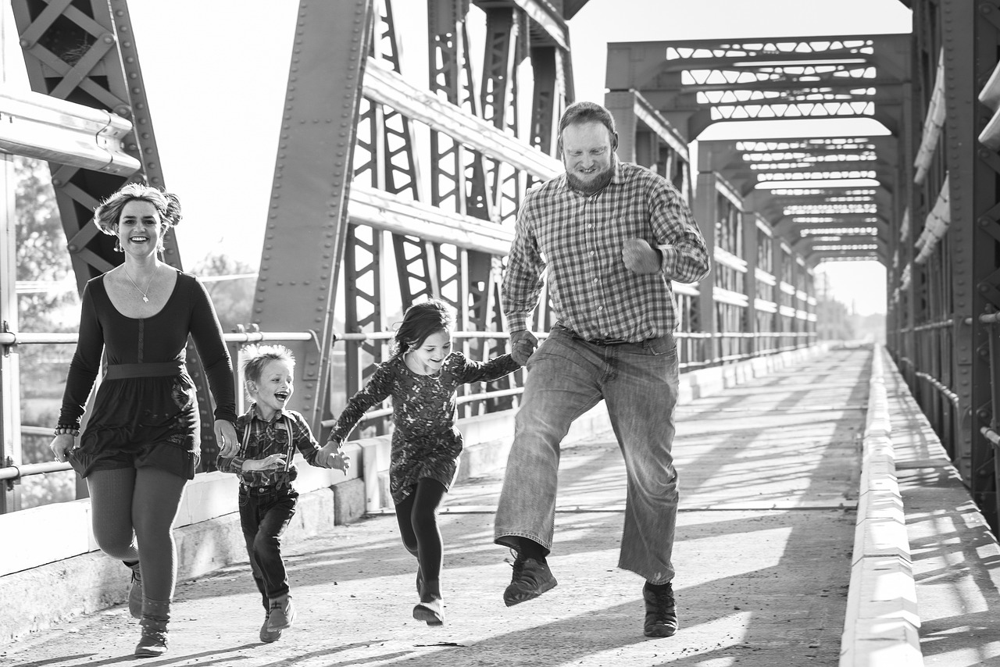
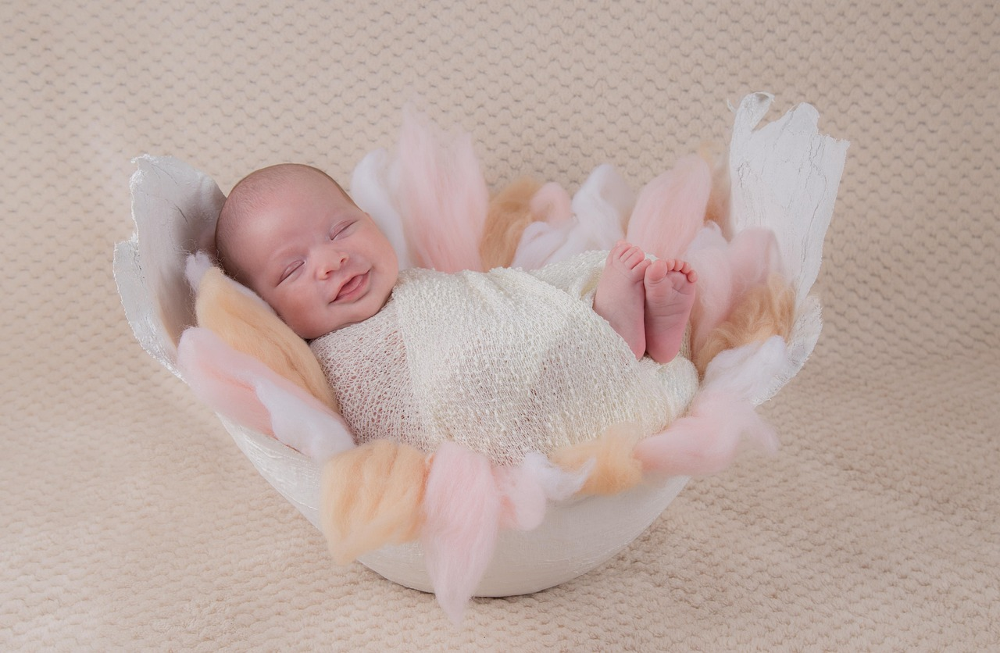

Bienvenue sur le site de Anna Photographie
Vous cherchez à capturer des moments uniques ? ne cherchez plus, vous êtes au bon endroit.
En savoir +Présentation d'Anna, Photographe Passionnées
Bonjour et bienvenue Je suis ravie de vous présenter Anna, une Photographe talentueuse qui transforme des moments ordinaires en souvenirs extraordinaires. Si vous recherchez une photographe professionnelle pour capturer des moments spéciaux dans votre vie, vous êtes au bon endroit.
A Propos d'Anna
Anna est une photographe passionnée basée dans les Hauts-de-France. Depuis son plus jeune âge, elle a été fascinée par l'art de la photographie et a rapidement développé son talent pour capturer l'essence de chaque instant. Sa passion pour la photographie est évidente dans chaque cliché qu'elle prend, et elle se consacre à créer des images qui racontent une histoire unique à chaque client.
Services Offerts
Anna propose une gamme compléte de services de photographie pour répondre à vos besoins spécifiques. Que vous recherchiez des photos de mariage romantique, des portraits de famille chaleureux, des séances photos de bébés adorables, des clichés artistiques, ou tout autre type de photographie, Anna est là pour vous. Ses services :
Photographie de Mariage.

Saisit les moments spéciaux de votre grand jour avec élégance et professionnalisme, créant des souvenirs intemporels que vous chérirez pour toujours.
Portraits de Famille.
Elle capture la beauté des liens familiaux, créant des portraits authentiques et chaleureux que vous aurez plaisir à afficher chez vous.
Photographie de Bébé et Nouveau-Né.
Anna sait comment capturer la douce innocence des tout-petits, créant des souvenirs précieux pour les nouveaux parents.
Photographie d'Evénements.

Que ce soit un anniversaire, une fête d'entreprise ou un événement spécial, Anna immortalise chaque moment mémorable.
Photographie Artistique

Anna à un talent ppour la photographie artistique, créant des images uniques et captivantes qui vous émerveilleront.
Pourquoi Anna ?
Talent Artistique
Anna posséde un oeil artistique exceptionnel et sait comment jouer avec la lumiére et les angles pour créer des images époustouflantes.
Professionnalisme
Elle met un point d'honneur à fournir un service professionnel, en veillant à ce que chaque séance photo soit une expérience agréable et sans stress.
Personnalisation
Anna travaille en étroite collaboration avec chaque client pour comprendre leurs besoins spécifiques et s'assure que chaque photo reflète leur personnalité et leur style.
Souvenirs Durables
Les photos d'Anna deviennent des souvenirs intemporels que vous chérirez toute votre vie.